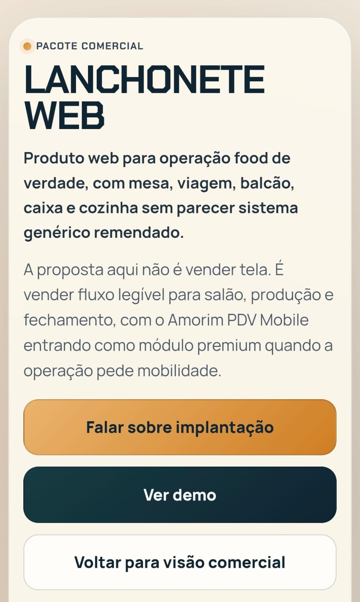
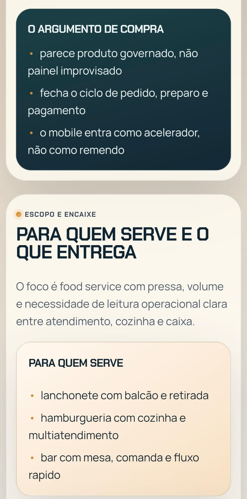
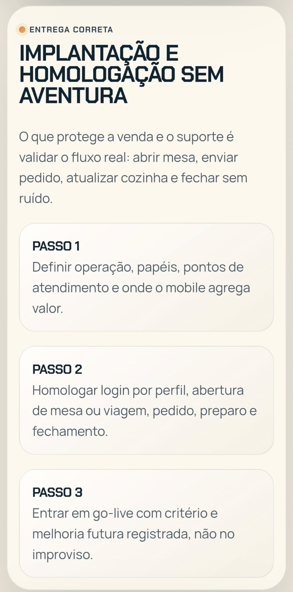

LANCHONETE WEB
Operação food de verdade com fluxo legível para salão, caixa, preparo e fechamento.
Não vende tela solta. Vende rotina clara para operação pequena ou alta demanda, com base validada e um caminho limpo para evoluir com mobilidade.
Cardápio digital
Fluxo de pedido no mesmo eixo da operação.
Multi-PDV
Controle entre mais de um ponto de venda.
Cozinha adaptável
Tela única ou preparo separado sem bagunça.
Por que esse pacote fecha
- fila, pedido e caixa sob controle
- fluxo de salão e produção mais previsível
- módulo mobile entra como premium de valor
Implantação
Parte de base validada, ajusta cardápio, identidade e regras do comércio. O web continua independente e o mobile entra de forma complementar.
Resolve
- fila, pedido e organização por etapa
- controle entre mais de um PDV
- adaptação entre tela única e cozinha separada
Ganhos
- mais velocidade de atendimento
- visão melhor do dono
- operação mais organizada e repetível
Recorte principal

Recortes de apoio

